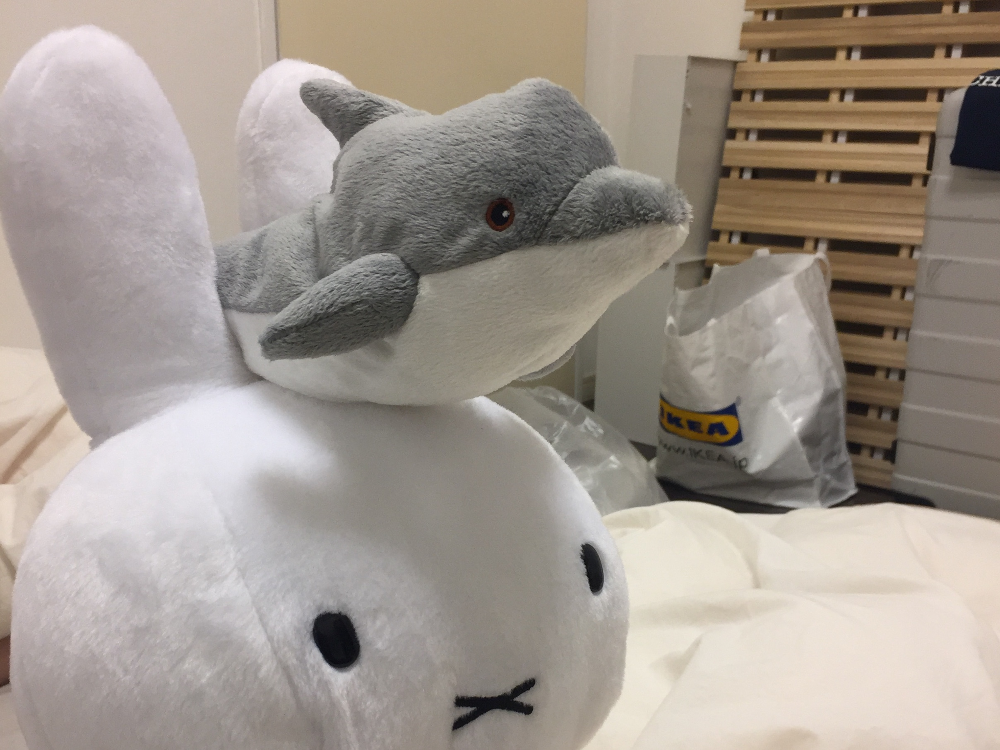

ほよほよほよは、
学内最大級オールジャンルインカレ音楽サークルです。
東大以外にも、日本女子大、東京女子大、お茶の水女子大、フェリス女学院大、慶應大、早稲田大、洗足音大、桐朋音大など、
総勢100名以上が所属しています。
音楽を愛する人であれば誰でも、
大学・学年・性別を問わず大歓迎です！

~ほよほよほよの特長~
1 演奏ジャンルの幅広さ
SOUL・FUNK・SKA・ROCK・POPS・JAZZ・FUSION・BLUES・METALなど…
どんな人でも音楽の趣向が合う仲間を見つけて演奏できますし、今まで聴いてこなかったような音楽にも沢山触れられます。

2 パートの豊富さ
ギター、ベース、ドラム、キーボード、ボーカル、パーカッションはもちろん、
バイオリンなどの弦楽器も大活躍します。
トランペット、トロンボーン、サックスなどの
強力なホーンセクション
も自慢です!
3 フリーバンド制
固定バンド制ではなく、
’’イベントごとに部員同士が好きな人と自由にバンドを組む’’
という制度を設けています。
学年を問わず色々な人と演奏ができ、
様々なジャンルの音楽を演奏することができます。

イベントの前に自由にバンドを組み、バンドメンバーで練習をすることが主な活動となります。
（基本的に1バンドで約3〜4回ほど練習があります。
週何回といった定期的な活動がないため、それぞれのペースに合った活動が可能です。

春と夏には合宿があり、ライブ漬けの楽しい日々を過ごせます。
その他にもバーベキューやクリスマスコンパなど、楽しいイベントが目白押しです。

平日休日問わず、部室が開放されています。
多くの機材が揃っており、webカレンダーで予約することでいつでも練習が可能です。
また、部室では月2~4回のペースでセッションを行っています。ぜひお越しください!